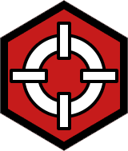

El futuro llegó — y fue una decepción brillante.
Las corporaciones controlan todo. El cromo reemplaza la carne.
Night City devora a sus habitantes. ¿Leyenda o basura?
La joya corrupta de California. Una megalópolis-estado independiente donde las corporaciones cotizan en bolsa vidas humanas y las megaestructuras de cristal proyectan sombras sobre millones de almas que no tienen nada que perder. Da igual si lleváis viviendo aquí desde la administración Kress o si es vuestra primera vez — Night City siempre encuentra la forma de sorprenderos.
La ciudad nació del sueño del visionario Richard Night, respaldado por corporaciones que convirtieron la Bahía de Coronado en la metrópoli del mañana. Night fue asesinado en su propia casa por atacantes sin identificar, pero su creación pervivió — incluso sobrevivió a la explosión nuclear de 2023 que arrasó su mismísimo corazón.
En 2077, Arasaka y Militech libran su guerra fría por el control del Net. El DataKrash del 94 fragmentó el ciberespacio para siempre; los Blackwall contienen horrores digitales inimaginables mientras los Netrunners aprenden a surfear sus ruinas como arqueólogos del futuro.
Aquí no hay héroes. Hay supervivientes con estilo.
Night City está dividida en zonas de control con sus propias facciones, economía y nivel de peligro según la Policía de Night City. Aprende a moverte — o aprende a morir.
Como en el juego, tu historia comienza antes de llegar a Night City. Tu estilo de vida determina tu punto de partida, tus contactos, tu mentalidad y cómo la ciudad te percibe desde el primer día. No es solo un origen — es quién eres.
En Cyberpunk Red tu rol es tu identidad mecánica. Cada uno posee una habilidad especial única que ningún otro puede replicar — el Combate Netrunning, el Carisma del Rockerboy, la Medicina de campo del Médico de Trauma. Elige quién eres en esta ciudad.

Las reglas oficiales de Cyberpunk Red implementadas directamente en el servidor vía RPR Redux y scripts Tot!. La ambientación es la Night City del 2077 — el mundo de V, de las corporaciones en guerra y del Net fragmentado. Dos capas que se complementan para la mejor experiencia posible.
Cada sistema programado específicamente para este servidor, combinando mods de Conan Exiles con scripts Tot! a medida para implementar las reglas reales de Cyberpunk Red.
Tres pasos para acceder a Cosmerium Era III. Sin burocracia — solo ganas de rolear en Night City.
Sigue este checklist en orden. En menos tiempo del que tarda un Ripperdoc en instalarte un implante, estarás dentro de Night City.
El cromo no se instala solo. Elige tu estilo de vida, tu rol, y construye tu leyenda en la ciudad más peligrosa del mundo — en el año más tenso de la historia.